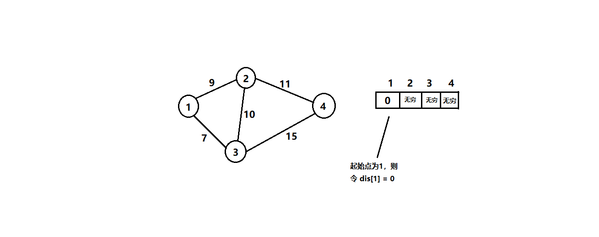
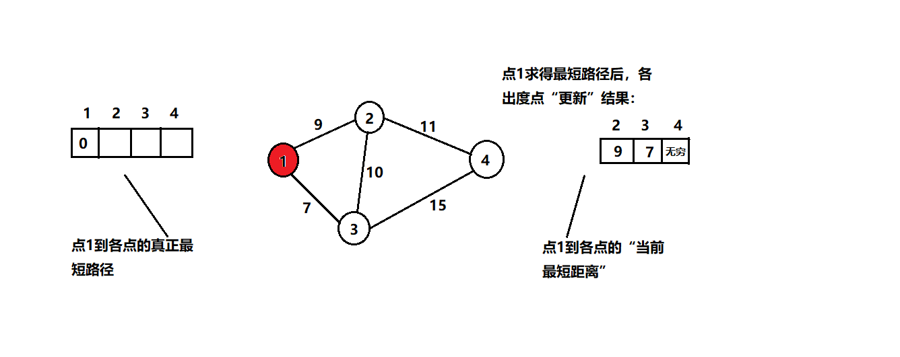
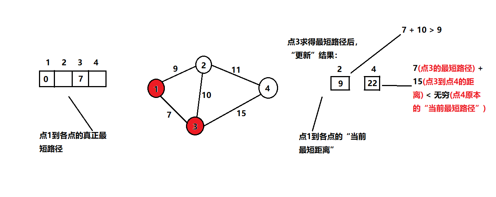
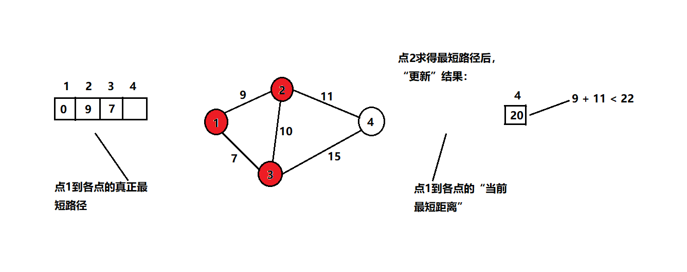
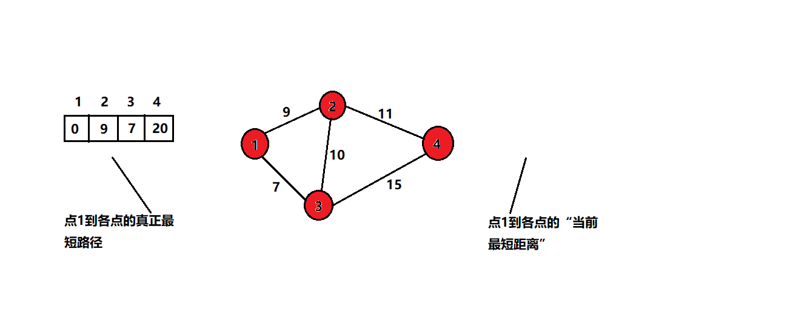
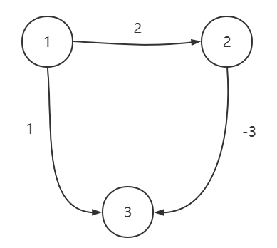

0. 前言
本文将介绍求解图最短路径的三个经典算法：迪杰斯特拉 Dijkstra、弗洛伊德 Floyd、贝尔曼-福特 Bellman-Ford。
1. 迪杰斯特拉 Dijkstra
迪杰斯特拉算法，用于解决 “给定起始点到其余点的最短路径” 问题，即单源最短路径算法。时间复杂度为 $O(n^2)$。其本质是贪心。
算法步骤为：
- 用
G[n][n]二维数组记录图数据；定义dis[n]一维数组记录起始点到各点的最短路径，初始化为INF（可以是 int 的最大值）；visited[n]一维数组记录该点是否给访问过（“访问过”表示已找到最短路径），初始化为false。 - 选择起始点
s，令dis[s] == 0。 - 进行
n次循环：- 先从
dis[n]数组的所有未访问结点中，找出最小值，并记录对应下标p，令visited[p] = true。 - 更新
p所有邻接点在dis[n]数组中的值，更新规则为：dis[i] = min{dis[i], dis[p]+G[p][i]}
- 先从
示例及图解：





核心伪代码如下：
1 | int dis[n]; |
2. 弗洛伊德 Floyd
弗洛伊德是求解图中任意两点间最短路径的算法。时间复杂度为 $O(n^3)$。其本质是动态规划。
算法步骤为：
任意两点间的最短距离用
d(x,y)表示，初始值为两点相连边的权重。遍历所有点 k，若任意两点 i 和 j，满足
d(i,j) > d(i,k) + d(k,j)，则d(i,j) = d(i,k) + d(k,j)。
代码如下：
1 | for (k = 1; k <= n; k++) { |
算法分析：Floyd 的核心思想是动态规划。
我们先定义状态：
d[k][i][j]，它表示经过前 k 个节点，点 i 到点 j 的最短路径。d[k][i][j]可以由d[k-1][i][j]转移而来：- 假设已经求出，经过前 k-1 个节点，任意两点间的最短路径。
- 那么，
d[k][i][j]就是 经过前 k-1 个节点 i 到 j 最短路径 与 经过第 k 个节点 i 到 j 最短路径 中的最小值。 - 而经过第 k 个节点 i 到 j 最短路径，就是 i 到 k 的最短路径加上 k 到 j 的最短路径。
- 最终，得出状态转移方程为：
d[k][i][j] = min{d[k-1][i][j], d[k-1][i][k] + d[k-1][k][j]}。
由于
d[k][x][x]的状态仅由d[k-1][x][x]转移而来，所以我们可以进行优化：d[i][j] = min{d[i][j], d[i][k] + d[k][j]}。
3. 贝尔曼-福特 Bellman-Ford
贝尔曼-福特算法，也是一个单源最短路径算法，同时它还能处理负权边。算法时间复杂度为 $O(NE)$，$N$ 是点的个数，$E$ 是边的个数。
算法步骤：
令源点为
s，源点到任意点x的最短距离用d(x)表示。d(s)初始值为0，其余初始值为无穷。进行 $N-1$ 次松弛操作，松弛操作即：遍历所有边，对于每一条边
e(i,j)，如果存在d(j) > d(i) + e(i,j)，则令d(j) = d(i) + e(i,j)。
代码如下：
1 | for (i = 0; i < n-1; i++) { |
算法分析：松弛操作的过程十分神奇，直觉告诉我它肯定是正确的，但具体原因我也是一头雾水。不过，我们可以知道，每次松弛操作后，至少能确定一个点的最短路径。所以，需要进行 $N-1$ 次。
Bellman-Ford 如何解决 Dijkstra 不能解决的负权边问题呢？如下图，源点为 1 。若在 Dijkstra 中，会先确定源点到点 3 的最短距离为 1 ，第二次大循环 1 是 dis[] 数组中的最小值；而在 Bellman-Ford 中，经过松弛操作便可以确定源点到点 3 的最短距离为 -1 。

Bellman-Ford 算法虽然能解决负权边的问题，但时间复杂度还是偏高，当用于稠密图时，是无法接受的。
因此，有人提出了 Bellman-Ford 的优化算法：SPFA。即第一次松弛操作，只需要对源点的邻接边进行即可；第二次松弛操作，只需要对与这些边相连点的邻接边进行即可；以此类推，直至所有边遍历完。这类似于 BSF 。